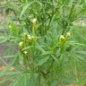

Oil Grimoire
Lavender Essential Oil

Tagetes Essential OilBotanical Information
Lavandula angustifolia from the Lamiaceae family, extracted from flowers. Originates from France, Bulgaria, England, and United States. Middle note with fast absorption. Known as true lavender, the Swiss Army knife of aromatherapy.
Scent Profile
Camphoraceous, sweet, and floral. Restores balance and achieves calmness.
Tincture
| Color | Light green |
| Scent | Floral, clean |
| Uses | Love, sleep (anoint forehead and pillow), purification baths, chastity, peace |
Lavender tincture is generally safe for skin anointing.
Herbal Lore
The most iconic aromatherapy oil, lavender immediately comes to mind when people say "aromatherapy." Most notable in magickal communities for dream pillows, this herb has wide variety of uses and should not be underestimated simply because it is popular and readily available.
Multiple lavender varieties exist with differing aromatherapeutic uses, but all share the same magickal properties. Lavandula angustifolia (true lavender) treats everything from burns and insect bites to allergies and acne. Sedating properties address anxiety and sleeplessness. Lavandula spika (spike lavender) treats respiratory ailments and stimulates the mind. Lavandula stoechas (French lavender) has analgesic properties for sore muscles and pain. Lavandula x intermedia (lavendin) is a hybrid with antiseptic qualities used as European hospital disinfectant, producing more quickly and cheaply than true lavender.
René-Maurice Gattefossé first recorded medicinal use when burned during lavender distillation, splashed with the oil, and witnessed rapid healing. Lavender banished the evil eye in antiquity and still purifies spaces today. The reputation for love spells dates to the height of Rome. Victorian England ladies would anoint themselves in lavender perfume to attract customers and announce their profession. In Victorian Flower Oracle language, lavender means "I am devoted to you."
Magickal Uses
Place one drop on tissue inside pillowcase to defeat bedtime anxiety. Alternatively, fill muslin tea bag with dried flowers, add drop of oil, tuck into pillowcase for longer lasting effect.
Diffuse 1 drop in water to ease the pain of grief or sorrow.
Helpful study aid for grimoires or textbooks. Increase focus by diffusing during study breaks. Take tissue with drop to gently inhale during tests.
Mix few drops with tablespoon salt, add to spray bottle of water for linen spray encouraging love, safety, and security. Also makes gentle bug repellent for outdoors.
Add 3 drops to fountain pen ink for writing love letters.
One drop each lavender and peppermint on tissue helps release tensions causing stress headaches.
For satisfying encounters between committed partners, place 2 drops lavender and 1 drop rose absolute on blotting paper under bed. Lavender removes pressure and encourages comfort and fidelity while rose reminds partners of attraction and romance.
Burn dried flowers on incense charcoal or fresh stems to cleanse spaces and purify religious participants. Induces sleep or meditative state.
Traditional reputation for banishing evil eye continues from ancient times. Purifies and protects against malevolent gazes and harmful intentions.
Spellwork Correspondences
Rub oil from center to either end to dress the candle, from top to bottom to draw energy toward you, or bottom to top to banish. Oils are flammable; use with care. Spellwork uses include balance, calming, cleansing, exorcism, and the Otherworld.
Botanical Source Detail
True lavender is Lavandula angustifolia in the Lamiaceae family (also classified as Labiatae). The plant is an evergreen woody shrub reaching about 1 metre, with pale green narrow linear leaves and blunt flower spikes in violet-blue. The whole plant is highly aromatic, and the essential oil is steam-distilled from the fresh flowering tops. An absolute and concrete are also produced in smaller quantities by solvent extraction.
Distribution
Indigenous to the Mediterranean region and now cultivated worldwide. The oil is produced mainly in France, with additional production in Spain, Italy, England, Australia, Tasmania, Yugoslavia, Turkey, Russia, Bulgaria, and Greece.
Other Species
Lavandula angustifolia divides into two subspecies: L. delphinensis and L. fragrans. Synonyms include L. vera and L. officinalis, with garden lavender and common lavender as everyday names. French lavender (L. stoechas) is a smaller shrub with dark violet flowers. See also separate entries for spike lavender and lavandin. The so-called cotton lavender (Santolina chamaecyparissus) and sea lavender (Statice caroliniana) belong to entirely different botanical families despite the shared common name.
Extraction & Characteristics
The essential oil is colourless to pale yellow with a sweet, floral-herbaceous scent and a balsamic-woody undertone, carrying a more distinctly floral fragrance than spike lavender. The absolute is a dark green viscous liquid with a very sweet, somewhat floral herbaceous odour.
Principal Constituents
Over 100 components are present, dominated by linalyl acetate (up to 40 percent), with linalol, lavandulol, lavandulyl acetate, terpineol, cineol, limonene, ocimene, and caryophyllene also among the major contributors. Composition shifts with growing conditions; high-altitude harvests tend to yield more esters.
Therapeutic Actions
Analgesic, anticonvulsive, antidepressant, antimicrobial, antirheumatic, antiseptic, antispasmodic, antitoxic, carminative, cholagogue, choleretic, cicatrisant, cordial, cytophylactic, deodorant, diuretic, emmenagogue, hypotensive, insecticide, nervine, parasiticide, rubefacient, sedative, stimulant, sudorific, tonic, vermifuge, and vulnerary.
Folk and Historical Use
Lavender is among the best established folk remedies, its scent familiar across generations. Traditional preparations were said to "comfort the stomach," but the herb's broader reputation rested on its role as a cosmetic water, an insect repellent, a scent for linen, and a reviving yet soothing oil. Historic herbalists treated the essential oil and lavender spirit as restorative and tonic against faintness, nervous palpitations, weak giddiness, spasms, and colic, with a few drops in a hot footbath credited with relieving fatigue. Outwardly applied, it addressed toothache, neuralgia, sprains, and rheumatism, and in conditions of debility (hysteria, palsy, and similar) it was regarded as a powerful stimulant.
Aromatherapy Uses
Generally regarded as the most versatile therapeutic essence. For skin care, lavender addresses abscesses, acne, allergies, athlete's foot, boils, bruises, burns, dandruff, dermatitis, earache, eczema, inflammations, insect bites and stings, insect repellent, lice, psoriasis, ringworm, scabies, sores, spots, all skin types, sunburn, and wounds. For circulation, muscles, and joints it eases lumbago, muscular aches and pains, rheumatism, and sprains. For the respiratory system it addresses asthma, bronchitis, catarrh, halitosis, laryngitis, throat infections, and whooping cough. For the digestive system it eases abdominal cramps, colic, dyspepsia, flatulence, and nausea. For the genito-urinary system it is used for cystitis, dysmenorrhoea, and leucorrhoea. For the immune system it supports recovery from flu. For the nervous system it addresses depression, headache, hypertension, insomnia, migraine, nervous tension and stress-related conditions, PMT, sciatica, shock, and vertigo.
Blending Partners
Blends well with most oils, particularly citrus and florals. Specifically named partners include  Atlas Cedarwood Essential Oil,
Atlas Cedarwood Essential Oil,  Texas Cedarwood Essential Oil,
Texas Cedarwood Essential Oil,  Virginian Cedarwood Essential Oil,
Virginian Cedarwood Essential Oil,  Clove Essential Oil,
Clove Essential Oil,  Clary Sage Essential Oil,
Clary Sage Essential Oil,  Pine Essential Oil,
Pine Essential Oil,  Geranium Essential Oil,
Geranium Essential Oil,  Rock Rose Essential Oil,
Rock Rose Essential Oil,  Oakmoss Absolute,
Oakmoss Absolute,  Vetivert Essential Oil, and
Vetivert Essential Oil, and  Patchouli Essential Oil.
Patchouli Essential Oil.
Other Uses
Pharmaceutical antiseptic ointments and fragrance ingredient. Extensively used across soaps, lotions, detergents, cosmetics, and perfumery, especially toilet waters and colognes. Also a flavouring agent across most food categories and in alcoholic and soft drinks.
Cross-References
- Lavender (botanical source)
- Lavandin Essential Oil (lavandin, hybrid relative)
Therapeutic Applications
- Dysmenorrhoea: Apply via massage, compress, or bath.
- Measles: Apply via skin oil/lotion, bath, steam inhalation, or vaporization.
- Chickenpox: Apply via compress, skin oil/lotion, or bath.
- Anxiety: Apply via massage, bath, or vaporization.
- Depression: Apply via massage, bath, or vaporization.
- Headache: Apply via massage, compress, or vaporization.
- Colic: Apply via massage.
- Nausea & Vomiting: Apply via massage or vaporization.
- Nervous Tension and Stress: Apply via massage, bath, or vaporization.
- Catarrh: Apply via massage, vaporizer/diffuser, or gentle inhalation.
- Bronchitis: Apply via massage, vaporizer/diffuser, or gentle inhalation.
- Asthma: Apply via massage, vaporizer/diffuser, or gentle inhalation.
- Whooping Cough: Apply via massage or steam inhalation.
- Rheumatism: Apply via massage, compress, or bath.
- Aches and Pains: Apply via massage, compress, or bath.
- High Blood Pressure: Apply via massage, bath, or vaporization.
- Congested & Dull Skin: Apply via massage, skin oil/lotion, flower water, bath, or inhalation (steam).
- Cuts & Sores: Apply via skin oil/lotion or compress.
- Burns: Apply via compress or neat application.
- Boils, Abscesses & Blisters: Apply via skin oil/lotion, compress, or bath.
- Bruises: Apply via skin oil/lotion or compress.
- Acne: Apply via massage, skin oil/lotion, flower water, bath, inhalation (steam), or neat application.
- Allergies: Apply via massage, skin oil/lotion, flower water, bath, or inhalation (steam).
- Athlete's Foot: Apply via skin oil/lotion.
- Dry & Sensitive Skin: Apply via massage, skin oil/lotion, flower water, or bath.
- Dermatitis: Apply via massage, skin oil/lotion, compress, flower water, or bath.
- Eczema: Apply via massage, skin oil/lotion, flower water, or bath.
- Insect Bites: Apply via skin oil/lotion or neat application.
- Insect Repellent: Apply via skin oil/lotion or vaporization.
- Irritated & Inflamed Skin: Apply via skin oil/lotion, compress, flower water, or bath.
- Muscular Cramp & Stiffness: Apply via massage, compress, or bath.
- Psoriasis: Apply via massage, skin oil/lotion, flower water, or bath.
- Rashes: Apply via massage, skin oil/lotion, compress, flower water, or bath.
- Scabies: Apply via skin oil/lotion.
- Scars & Stretch Marks: Apply via massage or skin oil/lotion.
- Spots: Apply via skin oil/lotion or neat application.
- Wounds: Apply via skin oil/lotion, compress, or bath.
- Wrinkles & Mature Skin: Apply via massage, skin oil/lotion, flower water, or bath.
- Sprains & Strains: Apply via compress.
- Earache: Apply via compress.
- Halitosis: Apply via mouthwash or gargle.
- Laryngitis & Hoarseness: Apply via steam inhalation.
- Shock: Apply via massage, bath, or vaporization.
- Vertigo: Apply via vaporization or steam inhalation.
- Sore Throat: Apply via vaporization or steam inhalation.
- Cramp & Gastric Spasm: Apply via massage or compress.
- Migraine: Apply via compress.
- Indigestion & Flatulence: Apply via massage.
- Insomnia: Apply via massage, bath, or vaporization.
- Pruritis: Apply via douche.
- PMS: Apply via massage, bath, or vaporization.
- Leucorrhoea: Apply via bath or douche.
- Labour Pain: Apply via massage, compress, or bath.
- Cystitis: Apply via compress, bath, or douche.
Traditional Grimoire Notes
Ruled by Mercury, this cleansing and purifying oil can be used to anoint yourself, sacred objects, and much more. Well-suited for exorcisms, purification, maintaining good health, encouraging restful sleep, and bringing peace. An excellent choice for use in an aromatherapy burner.